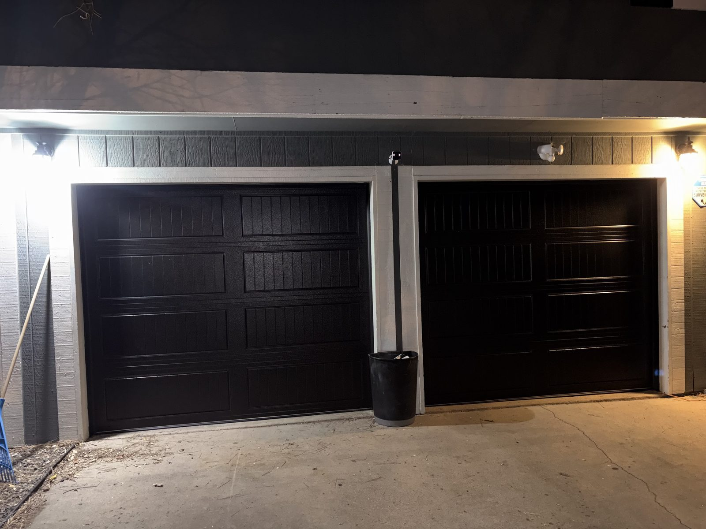
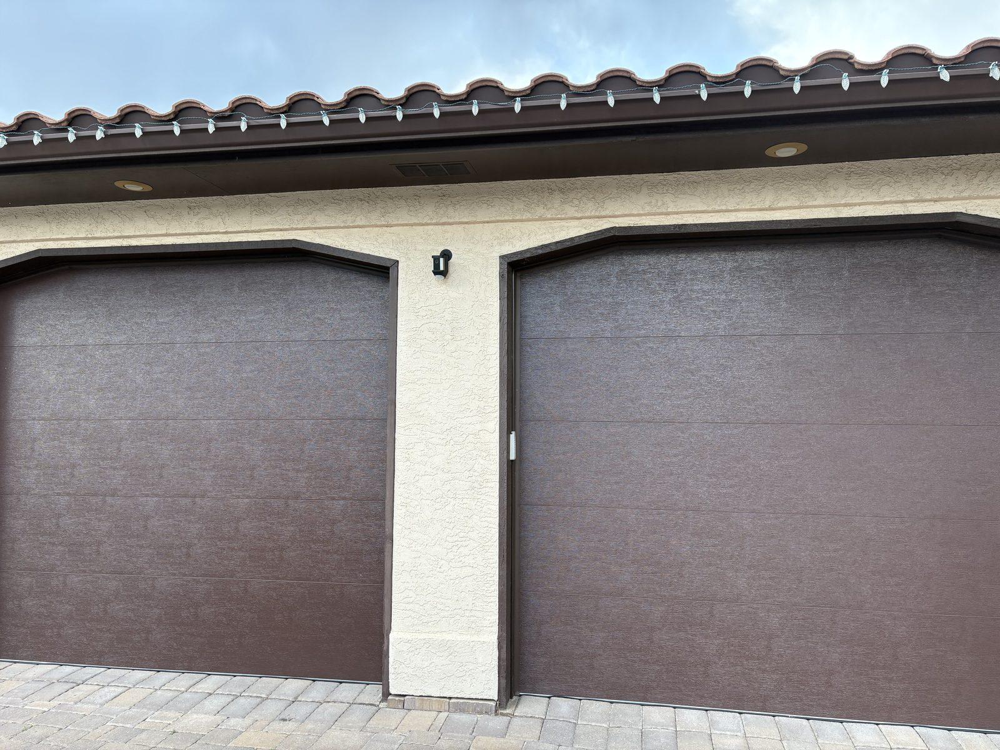
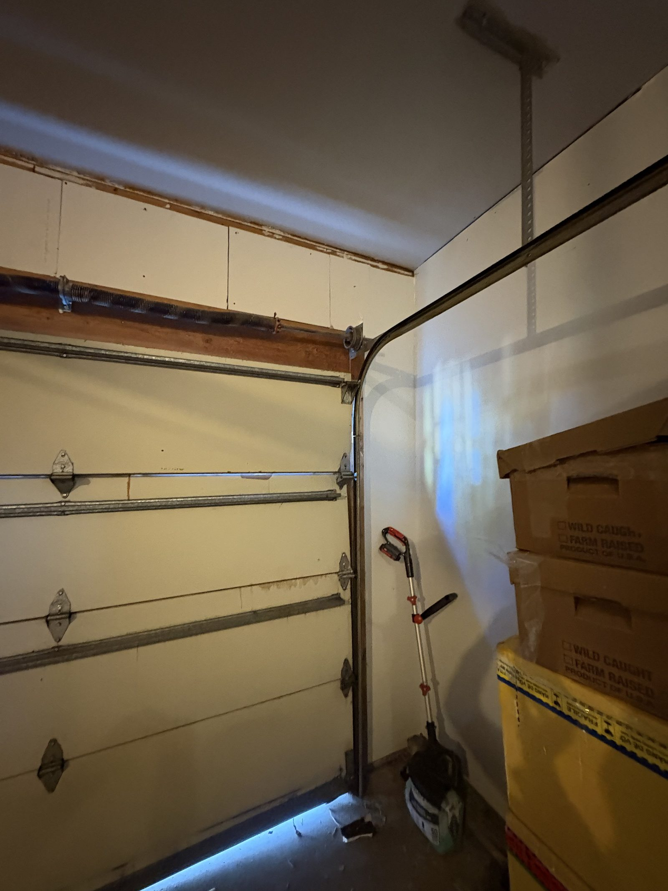
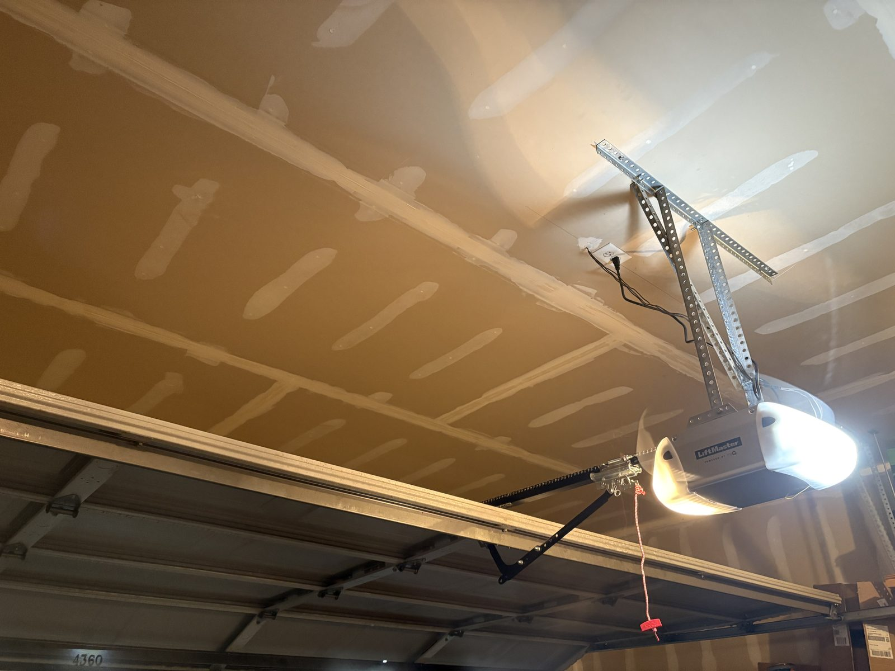

Installation
Garage Door Installation
Measurements, design guidance, hardware selection, and clean installation work focused on fit, durability, and a finished look that matches the home.
See installation detailsSprings Garage Door Services helps homeowners, landlords, and local property teams solve broken springs, worn doors, opener issues, and full replacements with clear recommendations, dependable scheduling, and work led directly by Eyal.
Service. Repair. Installation.

Built to make the next step feel easy
We service many of the opener and door brands Colorado Springs homeowners ask about most. Each logo below links to the manufacturer's official site for quick model and product reference.
Need help identifying your current opener, matching replacement parts, or choosing a compatible upgrade? Eyal can inspect the existing setup and recommend the cleanest next step.
Official manufacturer logos are shown for quick reference. We can confirm what is installed and whether repair parts, remotes, or full replacement makes the most sense.
Ask about your brandFrom broken springs and stuck doors to full replacements and opener upgrades, each service line is structured around clear expectations, practical recommendations, and an easier path to booking help.
Measurements, design guidance, hardware selection, and clean installation work focused on fit, durability, and a finished look that matches the home.
See installation details
Old door assessment, style and insulation options, and direct guidance on when replacement makes more sense than repeated repairs.
See replacement details
Repairs, replacements, sensors, remotes, wall buttons, keypads, wall-mount systems, and smart opener options that make daily access more reliable.

Broken springs, rollers, tracks, panels, hinges, sensors, and opener problems diagnosed quickly with a practical fix-first approach.
See repair details
Balance checks, safety review, part inspection, lubrication, and tune-up work that helps prevent avoidable breakdowns and noisy operation.
See maintenance details
One of the most urgent service calls. Spring replacement stays prominent because a failed spring can leave the whole door unsafe or unusable.
See spring detailsClear communication, practical recommendations, and local accountability from the first call to the final test.
Customers looking for garage door help usually want the same things: someone who answers directly, explains the real problem, and helps them choose the smartest fix. Springs Garage Door Services is positioned around that owner-led standard.
Instead of feeling like a generic contractor site, Springs Garage Door Services now reads like a real local business with a clear point of accountability, a defined service area, and straightforward next steps.
Who is responsible for the work, what happens after inspection, and how quickly they can move from problem to solution.
These jobs help customers picture what service looks like in practice, from product selection and opener upgrades to impact damage and urgent spring work.

Problem: the opening needed a better-insulated door for year-round use. Fix: select the right style, color, and window layout. Result: stronger curb appeal and better day-to-day comfort.

Problem: the existing opener failed and daily access became unreliable. Fix: install a new LiftMaster system with remotes, keypad entry, and app control. Result: quieter operation and easier access.

Problem: vehicle impact left the bottom section damaged and unsafe. Fix: replace the affected panel and restore alignment. Result: the door returned to smooth operation with cleaner curb appeal.

Problem: a broken spring stopped the door from lifting safely. Fix: replace the spring and complete a full maintenance check. Result: the door moved correctly again and nearby wear issues were caught early.
Colorado Springs stays at the center, with nearby routes that support repair calls, replacements, opener work, and maintenance across the broader region.
Main local focus with the highest relevance for service intent and branded search.
Homeowner and small commercial demand supported with fast routing.
Higher-value residential service area for installation and replacement demand.
Mountain-area route for repairs, maintenance visits, and insulated door upgrades.
Local route coverage for repairs, tune-ups, and emergency calls.
Good fit for opener work, spring repair, and replacement jobs.
Supports broader regional visibility across eastern service routes.
Target area for premium residential service positioning.
These answers help customers understand what to expect before they call, email, or request a quote.
Yes. Springs Garage Door Services is positioned for both residential and light commercial work, including repairs, replacements, opener service, maintenance, and installation support.
Yes. After inspection, Eyal can explain whether a focused repair is still the smart move or whether the door, panels, springs, or opener are better candidates for replacement.
Service coverage includes chain and belt drive systems, wall-mount options, remotes, keypads, safety sensors, and smart openers that can be controlled from a phone.
You can call directly or send a request through the contact page with your service type, location, urgency, and contact details. That makes it easier to route the job and respond with the right next step.
Whether the problem is a broken spring, a failing opener, a damaged panel, or a door that is ready for replacement, the site now gives customers a direct way to reach Springs Garage Door Services and move forward.